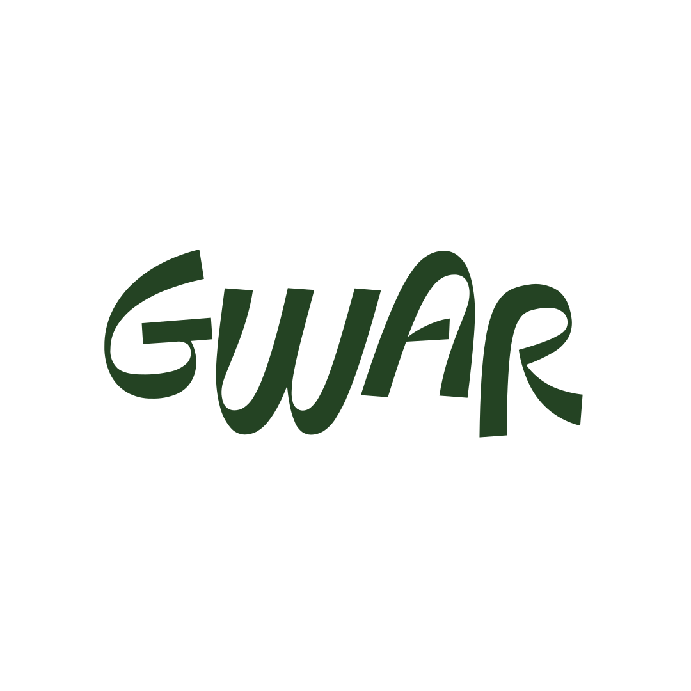

Polityka prywatności
Obowiązuje od 16 października 2026 r.
1. Administrator danych
Administratorem danych osobowych jest T&K Investment sp. z o.o. z siedzibą w Krakowie, ul. Św. Łazarza 3/2, 31-530 Kraków, wpisana do rejestru przedsiębiorców KRS pod numerem 0001029689, NIP 6751780846, REGON 524976310, prowadząca lokale Bar Gwar (ul. Mostowa 8, Kraków), U Edka i Gałki („my”). Kontakt w sprawach danych osobowych: gwar@gwar.bar.
2. Strona bar.gwar.bar i rezerwacje
Gdy rezerwujesz stolik przez formularz, przetwarzamy podane przez Ciebie dane: imię, adres e-mail, numer telefonu, datę i godzinę wizyty, liczbę osób oraz uwagi. Robimy to, żeby przyjąć i potwierdzić rezerwację oraz skontaktować się z Tobą w jej sprawie (art. 6 ust. 1 lit. b RODO). Dane z formularza trafiają do naszej skrzynki e-mail i są przechowywane nie dłużej niż 12 miesięcy od daty wizyty.
Strona korzysta z tagu Google Ads (pliki cookie) do mierzenia skuteczności reklam oraz pokazuje mapę Google Maps. Te usługi mogą zapisywać pliki cookie i przetwarzać Twój adres IP zgodnie z zasadami Google. Możesz zablokować pliki cookie w ustawieniach przeglądarki.
3. Gwarify – wewnętrzne narzędzie dla pracowników
Gwarify (gwarify.gwar.bar) to aplikacja dostępna wyłącznie dla naszych pracowników i współpracowników. Służy do rejestracji czasu pracy, grafiku i rozliczania wynagrodzeń, w tym premii za opinie klientów. Dane pracowników przetwarzamy w celu wykonania umowy i obowiązków pracodawcy (art. 6 ust. 1 lit. b i c RODO) przez czas współpracy i okres wymagany przepisami.
4. Dane z Google (Google Business Profile)
Gwarify łączy się z kontem Google, które zarządza profilami firmy naszych lokali w Google, wyłącznie za zgodą właściciela tego konta. Korzystamy z tego dostępu tylko w jednym celu: pobieramy opinie wystawione naszym lokalom (nazwa autora wyświetlana w Google, ocena, treść i data opinii), aby sprawdzić, których pracowników wymieniono, i naliczyć im premie.
- Nie publikujemy, nie zmieniamy ani nie usuwamy niczego w profilach firmy ani w opiniach.
- Nie sprzedajemy tych danych, nie udostępniamy ich innym podmiotom i nie używamy ich do reklamy.
- Token dostępu przechowujemy wyłącznie na naszym serwerze; nie jest widoczny dla pracowników.
- Pobrane opinie widzą tylko administratorzy Gwarify oraz pracownicy, których dana opinia dotyczy.
- Dostęp można w każdej chwili cofnąć w Gwarify („Odłącz”) albo w ustawieniach konta Google: myaccount.google.com/permissions.
Korzystanie z informacji otrzymanych z interfejsów API Google i ich przekazywanie innym aplikacjom jest zgodne z zasadami dotyczącymi danych użytkownika usług interfejsów API Google, w tym z wymogami ograniczonego użytkowania (Limited Use).
5. Odbiorcy danych
Dane mogą przetwarzać nasi dostawcy usług wyłącznie na nasze zlecenie: hosting stron i aplikacji (GitHub Pages, Namecheap), poczta e-mail (Zoho) oraz Google (formularz rezerwacji, Google Ads, Google Maps).
6. Twoje prawa
Masz prawo dostępu do swoich danych, ich sprostowania, usunięcia, ograniczenia przetwarzania, przeniesienia oraz wniesienia sprzeciwu. Napisz do nas: gwar@gwar.bar. Możesz też złożyć skargę do Prezesa Urzędu Ochrony Danych Osobowych (ul. Stawki 2, 00-193 Warszawa).
7. Zmiany
O zmianach tej polityki informujemy, aktualizując ją na tej stronie wraz z datą obowiązywania.
← Wróć na stronę główną